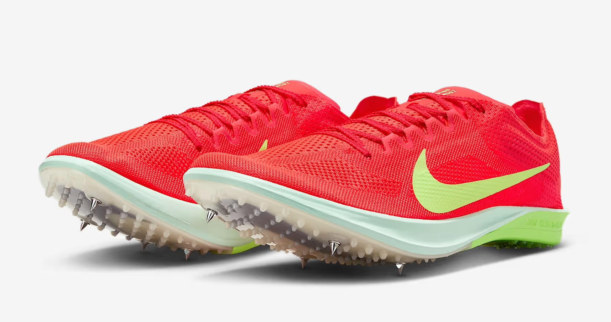
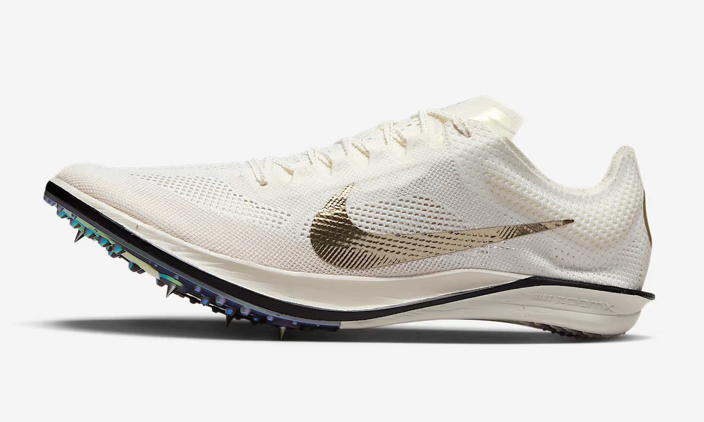
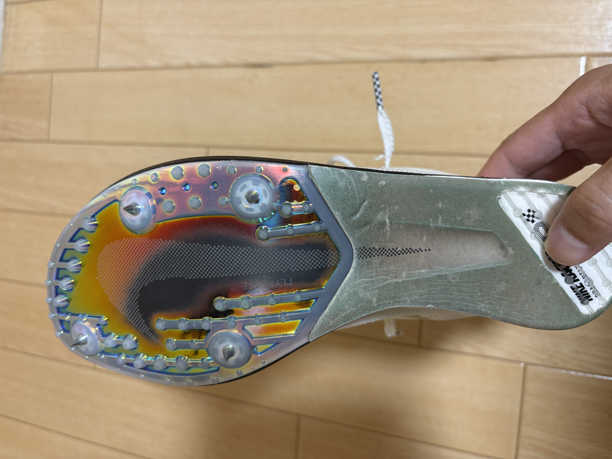

公式の引用
フルレングスのカーボンファイバー製プレートを使った初めてのDragonfly。プレートの反発力をさらに引き出し、軽量化も実現しています。曲線的なデザインにより、レース終盤で疲れたときでも推進力のある履き心地を実現。
Nike最軽量で最も弾力性に優れたフォームによるフルレングスのクッショニングシステム。ZoomXミッドソール素材と新しい製造方法により、エネルギー貯蔵率とリターン率がさらに向上しています。
従来のバージョンよりも中足部と前足部をやや広げたデザイン。直線コースだけでなく、特にコーナーでの安定性が向上します。
ドラゴンフライ2との違い
|
ドラゴンフライ2  |
ドラゴンフライエリート  |
|
|---|---|---|
| 重さ | 139g | 128g |
| 価格 | 22,660円 | 28,600円 |
価格はエリートの方が高く、意外とドラゴンフライ2は手頃な価格ですね。（最近の中では） 重さがエリートの方が軽いのは意外でした。
購入理由
1500ｍに取り組むにあたり、初代ドラゴンフライは長距離用すぎるため、更に反発の強いシューズを探していました。 ドラゴンフライ2にしなかった理由はそこです。ではエアズームビクトリーなのでは？と思うかもしれませんが、実はこちらも試しています。 その結果、初代は良かったのですがビクトリー２はエアの位置が変わったのか反発を感じず、フィット感も良いと感じなかったためやめました。 （初代ビクトリーはエアが20kmでパンクしたため今回チャレンジだったのですが、、） アディダスのアバンチなども履いたことがありますが、結局ドラゴンフライが安牌だなと感じました。
履いた感想
実際に履いたところ、想像していた感覚とは違っていました。ソールが固く、自分の足でレスポンスをもらえるスパイクと思っていたのですが、想像以上に柔らかいです。 ぶっちゃけ初代ドラゴンフライとさほど変わらない柔らかさではないでしょうか。ただ、反発はこちらの方が強いように感じます。 そのため当初の想定とは違いましたが1500ｍでもこちらを履いています。ドラゴンフライは前からベターではあるけどベストではない、という安定択の選択肢だと思っているので、 まだまだ最適なスパイク探しは続きそうです。
先日5000ｍでも試しにエリートで走ってきましたが、全く問題なく、というよりかなり感触良く走ることができました。 スパイクのピンは７ｍｍ固定ピンと長いと思う人もいるかもしれませんが、ピンの本数が４本に減り、そこまで負担を感じません。 何よりソールの柔らかさ、反発の強さがあるため初代ドラゴンフライよりいいのではないかとさえ思います。おそらく10000ｍもこれで走れるかなという感じです。 後は3000ｍSCで履ければ一旦は全てこれでいいですね。 （ドラゴンフライ２はまだ履いていないのでもっといい可能性もあるが）
ちなみにエリートを履くときのみ裸足で履いています。靴下だと滑ってしまい踏ん張りが効きませんでした。

Nike Dragonfly 2 Elite 陸上距離スパイク
ナイキの最新長距離レーシングスパイク。軽量で高反発のZoomXソールを搭載。